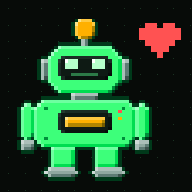
B in B.A.B.E.L. · Roboter-Pflege & Auto-Kampf
Bots & Buddies
In ArbeitSpielt in: Werkstatt und Schrottschacht
Roboter pflegen, ausrüsten und als Team hinunter in den Schrottschacht schicken. Dort unten warten die Roboter, die beim langen Stillstand heruntergefallen sind, und man holt sie Schicht für Schicht zurück.
So spielt es sich
- Roboter füttern, reparieren und bei Laune halten, ein bisschen wie ein Tamagotchi.
- Expeditionen als Auto-Kämpfe: Das Team kämpft selbst, du stellst es zusammen und rüstest es aus.
- Gerettete Roboter ziehen in die Werkstatt ein und machen in den anderen Spielen mit.
Wo es spielt
- Werkstatt in einem leeren Laufwerksschacht
- Schraubenhalde
- Kabelsalat
- Lüftergrund
- Netzteil mit dem Brummtrafo
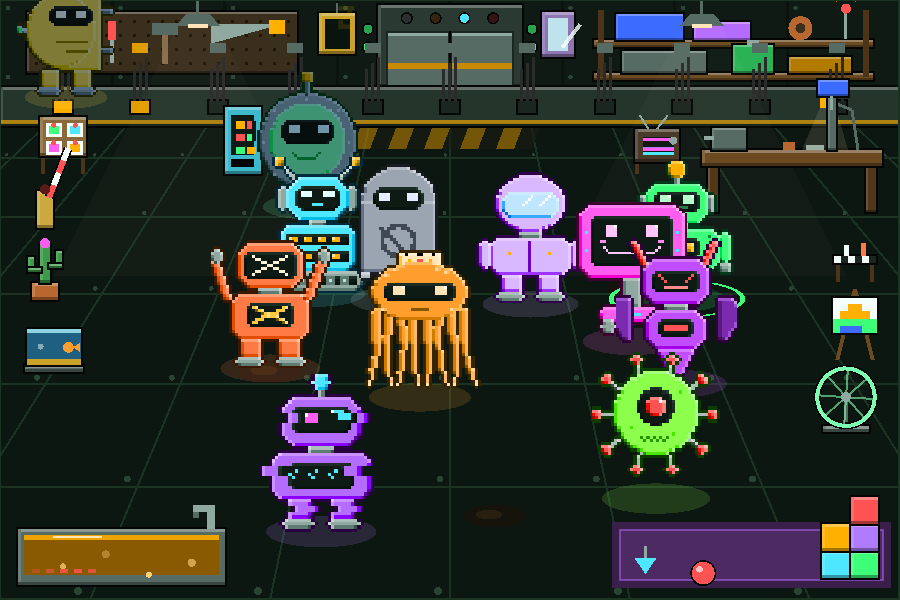
Die Werkstatt
Alle geretteten Roboter laufen frei in der Werkstatt herum. Jeder bringt ein persönliches Teil mit, das danach an seinem festen Platz steht: OKTA ein Aquarium, HEXA einen Snackautomaten, DAEMON eine Kaffeemaschine. So füllt sich die Werkstatt mit jedem Roboter. Antippen wählt einen aus, nochmal antippen streichelt ihn.
| Wert | sinkt | steigt durch |
|---|---|---|
| Energie | 1 Punkt in 6 Minuten | Akku (+35), Schlafen an der Ladeleiste |
| Laune | 1 Punkt in 5 Minuten, rostig doppelt so schnell | Spielen, Streicheln, Expeditionen |
| Pflege | 1 Punkt in 8 Minuten | Ölkanne (+40) |
Die Werte sinken auch, wenn das Spiel zu ist, höchstens für 48 Stunden. Ist der Akku leer, schaltet der Roboter ab und lädt. Kaputt geht nichts.
Ausbau
Stationen kosten Schrauben, stehen sichtbar im Raum und machen die Pflege leichter, aber nie überflüssig. Alles zusammen kostet 3650 Schrauben, das reicht für etwa ein bis zwei Wochen Spielen.
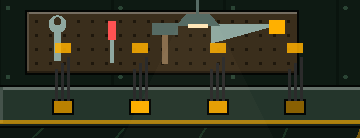
LadeleisteSchlafende laden 35 / 70 / 100 % schneller
60 / 180 / 450 Schrauben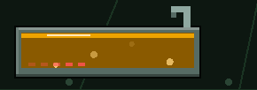
ÖlbadPflege sinkt 15 / 30 / 45 % langsamer
60 / 180 / 450 Schrauben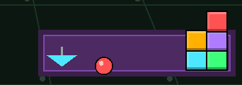
SpieleckeLaune sinkt 15 / 30 / 45 % langsamer
60 / 180 / 450 Schrauben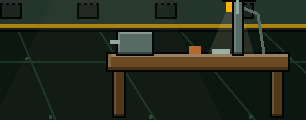
Werkbankzerlegen und aufwerten, dann 25 und 50 % günstiger
80 / 200 / 450 Schrauben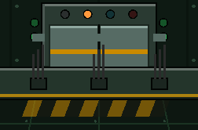
Aufzug2 und 3 Aufträge gleichzeitig
250 / 600 Schrauben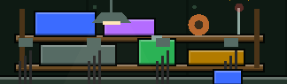
Funkantennekommt mit der Verbindung zu den anderen Spielen
noch nicht zu bauen
Ausrüstung
| Attribut | wirkt auf |
|---|---|
| Leistung | Schaden |
| Takt | Tempo und Ausweichen |
| Logik | Volltreffer |
| Gehäuse | Leben |
- Drei Plätze: Waffe, Rüstung, Chip, in vier Seltenheiten: Schrott, solide, selten, legendär.
- An der Werkbank lassen sich Teile zerlegen oder eine Seltenheit höher aufwerten.
- Im Shop gibt es Akkus, Öl, Schrottkisten, Tresorkisten und Trainingsdaten.
- Der Zustand zählt im Kampf: Gut gepflegte Roboter haben mehr Leben, mehr Volltreffer und weichen öfter aus.
Expeditionen
- Ein Team aus bis zu drei Robotern kämpft sich Kampf für Kampf tiefer. Die Kämpfe laufen von selbst, entschieden wird davor und dazwischen.
- Nach jedem Sieg eine von drei Belohnungen: ein Modul fürs Team, ein Teil für zuhause, oder Reparatur und Vorräte.
- Rettung: Nach Kampf 2, 5, 8 und so weiter wird ein Roboter gerettet, jeder wartet in seiner Ebene.
- Aufzug: weiter oder mit der ganzen Beute heim. Der nächste Kampf ist schon zu sehen, dazu gibt es einen Nebenschacht mit zäheren Gegnern und mehr Schrauben.
- Haltestellen: Wer den Wächter einer Ebene besiegt, kann später direkt in der nächsten einsteigen.
- Fällt das ganze Team aus, bleibt die halbe Beute liegen. Gerettete Roboter und Erfahrung bleiben immer.
Die vier Ebenen
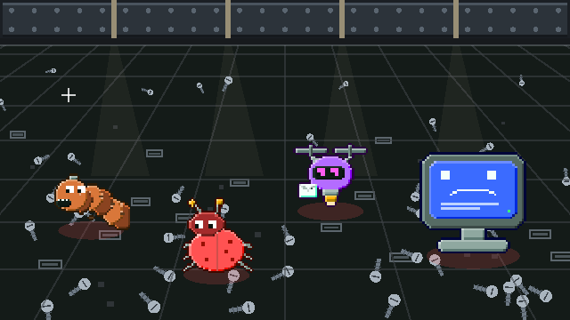
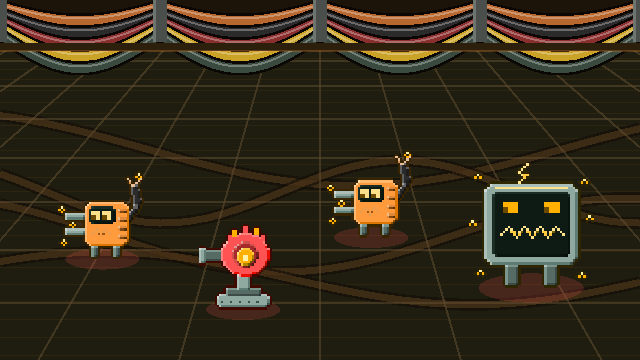
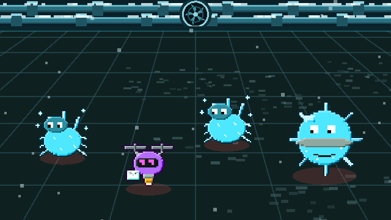
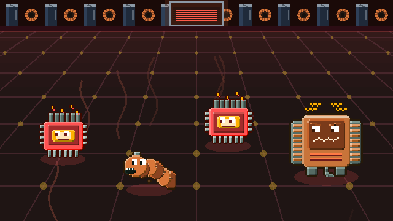
| Ebene | Kämpfe | Gegner | Boss in der Mitte | Wächter |
|---|---|---|---|---|
| Schraubenhalde | 1–10 | die vier ersten Gegner gleich oft | Bluescreen | Bluescreen |
| Kabelsalat | 11–20 | vor allem Wackelkontakte, Rostwürmer doppelt | Bluescreen mit Wackelkontakten | Kurzschluss |
| Lüftergrund | 21–30 | vor allem Frostbugs | Kurzschluss | Kältekern |
| Netzteil | ab 31 | vor allem Überhitzer, dazu alles gemischt | Kältekern | Brummtrafo |
Gegner
Keine Feinde mit Absicht, sondern Getier, das im Schacht wuchert, wo kein Roboter wohnt.
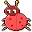
Bug GegnerDer häufigste Gegner. Schwach, aber oft in Gruppen. Steht vorn.
ab Kampf 1 · alle Ebenen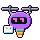
Spam-Drohne GegnerFliegt über die vorderen Reihen hinweg und zielt auf den hintersten Roboter.
ab Kampf 2 · alle Ebenen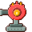
Firewall GegnerLangsam, schießt aber wild und hart auf irgendwen im Team.
ab Kampf 3 · alle Ebenen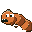
Rostwurm GegnerZäh und gepanzert (1 Panzerung). Hält lange durch.
ab Kampf 4 · alle Ebenen, im Kabelsalat und im Netzteil doppelt so oft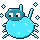
Frostbug GegnerSeine Treffer kühlen ab: Wer getroffen wird, ist später wieder dran.
ab Kampf 21 · Lüftergrund (vor allem), Netzteil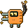
Wackelkontakt GegnerSchnell und geladen: Wer ihn trifft, bekommt einen Schlag zurück, der tiefer im Schacht stärker wird.
ab Kampf 11 · Kabelsalat (vor allem), Lüftergrund, Netzteil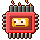
Überhitzer GegnerStrahlt Hitze ab und trifft das ganze Team zugleich, jeden mit 60 % seines Schadens.
ab Kampf 31 · Netzteil (vor allem)- Bluescreen Boss
Trifft das ganze Team zugleich. Hinterlässt ein seltenes Teil und einen Akku.
Kampf 5, 10, 15 · Mitte von Schraubenhalde und Kabelsalat (dort mit Wackelkontakten), Wächter der Schraubenhalde, im Netzteil im Wechsel 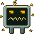
Kurzschluss WächterSchnell, schlägt wild um sich und landet viele Volltreffer (25 %). Kommt mit Wackelkontakt und Spam-Drohne.
Kampf 20, 25 · Wächter des Kabelsalats, Boss in der Mitte des Lüftergrunds, im Netzteil im Wechsel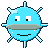
Kältekern WächterTrifft das ganze Team und kühlt alle zugleich ab. Kommt mit Frostbug und Bug.
Kampf 30, 35 · Wächter des Lüftergrunds, Boss in der Mitte des Netzteils, dort auch im Wechsel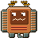
Brummtrafo WächterBrummt so laut, dass er das ganze Team zugleich trifft. Wer ihn trifft, verbrennt sich: 3 Schaden zurück. Kommt mit Überhitzer und Frostbug.
Kampf 40, danach im Wechsel · Wächter des Netzteils, dort im Wechsel mit den anderen drei
Teams, Aufträge und Tagesschacht
- Teams: Bis zu sechs Teams aus je drei Robotern. Genau eins ist aktiv und lebt in der Werkstatt, die anderen ruhen bei ihren persönlichen Teilen.
- Aufträge: Ein ruhendes Team geht für 1, 4, 8 oder 12 Stunden allein los und kommt mit Beute und Erfahrung zurück.
- Tagesschacht: Einmal am Tag eine Expedition mit fester Vorgabe: keine Reparatur, allein, Glaskanonen oder Schatzsuche. Danach gibt es immer ein Teil.
- Erinnerungen: Auf Wunsch meldet sich das Spiel, wenn ein Roboter etwas braucht oder ein Team zurück ist. Standardmäßig aus, höchstens eine am Tag.
Die 22 Roboter
Jeder verteilt 12 Punkte anders auf Leistung, Takt, Logik und Gehäuse und hat eine Eigenheit im Kampf. Gerettet wird jeder in seiner Ebene.
 BYTE „Hallo!“
BYTE „Hallo!“Heilt 2 Leben je Zug.
Lei 3 · Tak 3 · Log 3 · Geh 3
Von Anfang an dabei · Bringt mit: Pinnwand mit Fotos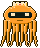
OKTA „Blubb!“Trifft alle Gegner zugleich.
Lei 4 · Tak 3 · Log 2 · Geh 3
Wartet in: Schraubenhalde · Bringt mit: Aquarium GATE „Zutritt!“
GATE „Zutritt!“Lenkt Angriffe auf sich, 2 Panzerung.
Lei 3 · Tak 1 · Log 2 · Geh 6
Wartet in: Kabelsalat · Bringt mit: Schranke NULL „...“
NULL „...“+20 % Ausweichen.
Lei 2 · Tak 4 · Log 4 · Geh 2
Wartet in: Lüftergrund · Bringt mit: Leerer Bilderrahmen HEXA „0xF00D!“
HEXA „0xF00D!“+20 % Volltreffer.
Lei 2 · Tak 3 · Log 5 · Geh 2
Wartet in: Schraubenhalde · Bringt mit: Snackautomat PARI „Halbe-halbe!“
PARI „Halbe-halbe!“Heilt sich um 30 % des Schadens.
Lei 3 · Tak 3 · Log 3 · Geh 3
Wartet in: Schraubenhalde · Bringt mit: Waage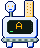
ASKI „Hi :)“+30 % Schrauben fürs Team.
Lei 2 · Tak 2 · Log 5 · Geh 3
Wartet in: Schraubenhalde · Bringt mit: Altes Terminal QUBIT „0 und 1!“
QUBIT „0 und 1!“+30 % Ausweichen.
Lei 1 · Tak 5 · Log 5 · Geh 1
Wartet in: Lüftergrund · Bringt mit: Kristallkugel CHROMA „Ooh, bunt!“
CHROMA „Ooh, bunt!“+50 % Erfahrung fürs Team.
Lei 3 · Tak 3 · Log 4 · Geh 2
Wartet in: Lüftergrund · Bringt mit: Farbeimer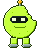
NIBBLE „Happs!“Heilt sich um 20 % des Schadens, +15 % Schrauben fürs Team.
Lei 4 · Tak 3 · Log 1 · Geh 4
Wartet in: Schraubenhalde · Bringt mit: Keksdose GLITCH „H#ll§!“
GLITCH „H#ll§!“+30 % Volltreffer.
Lei 4 · Tak 4 · Log 3 · Geh 1
Wartet in: Lüftergrund · Bringt mit: Flackernder Fernseher PATCH „Hält schon!“
PATCH „Hält schon!“Blockt 2 Treffer je Kampf.
Lei 2 · Tak 2 · Log 3 · Geh 5
Wartet in: Kabelsalat · Bringt mit: Verbandskasten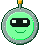
LOOP „Und nochmal!“+20 % Tempo.
Lei 2 · Tak 5 · Log 3 · Geh 2
Wartet in: Kabelsalat · Bringt mit: Hamsterrad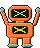
XOR „Anders!“Zielt auf den hintersten Gegner, +15 % Volltreffer.
Lei 5 · Tak 3 · Log 2 · Geh 2
Wartet in: Kabelsalat · Bringt mit: Schachbrett MIRA „!ollaH“
MIRA „!ollaH“3 Schaden an Angreifern.
Lei 2 · Tak 3 · Log 3 · Geh 4
Wartet in: Schraubenhalde · Bringt mit: Spiegel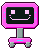
PIXA „Piep!“Heilt 3 Leben je Zug.
Lei 2 · Tak 4 · Log 3 · Geh 3
Wartet in: Schraubenhalde · Bringt mit: Staffelei mit Pixelbild SHIFT „Rutsch rüber!“
SHIFT „Rutsch rüber!“Ist als Erster dran, +10 % Ausweichen.
Lei 3 · Tak 5 · Log 2 · Geh 2
Wartet in: Kabelsalat · Bringt mit: Rutsche ROOT „sudo hallo“
ROOT „sudo hallo“2 Panzerung.
Lei 5 · Tak 1 · Log 3 · Geh 3
Wartet in: Netzteil · Bringt mit: Chefsessel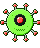
VIRUS „Hatschi!“Getroffene rosten: 2 Schaden je Zug.
Lei 3 · Tak 3 · Log 4 · Geh 2
Wartet in: Lüftergrund · Bringt mit: Kaktus ERROR „404!“
ERROR „404!“2 Schaden an Angreifern, +10 % Volltreffer.
Lei 6 · Tak 2 · Log 2 · Geh 2
Wartet in: Netzteil · Bringt mit: Warnschild 404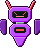
DAEMON „Läuft…“Ist als Erster dran, heilt sich um 15 % des Schadens.
Lei 4 · Tak 2 · Log 4 · Geh 2
Wartet in: Netzteil · Bringt mit: Kaffeemaschine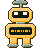
MORSE „·– ·–“Zielt auf den hintersten Gegner, +25 % Erfahrung fürs Team.
Lei 2 · Tak 4 · Log 4 · Geh 2
Wartet in: Kabelsalat · Bringt mit: Morsetaste